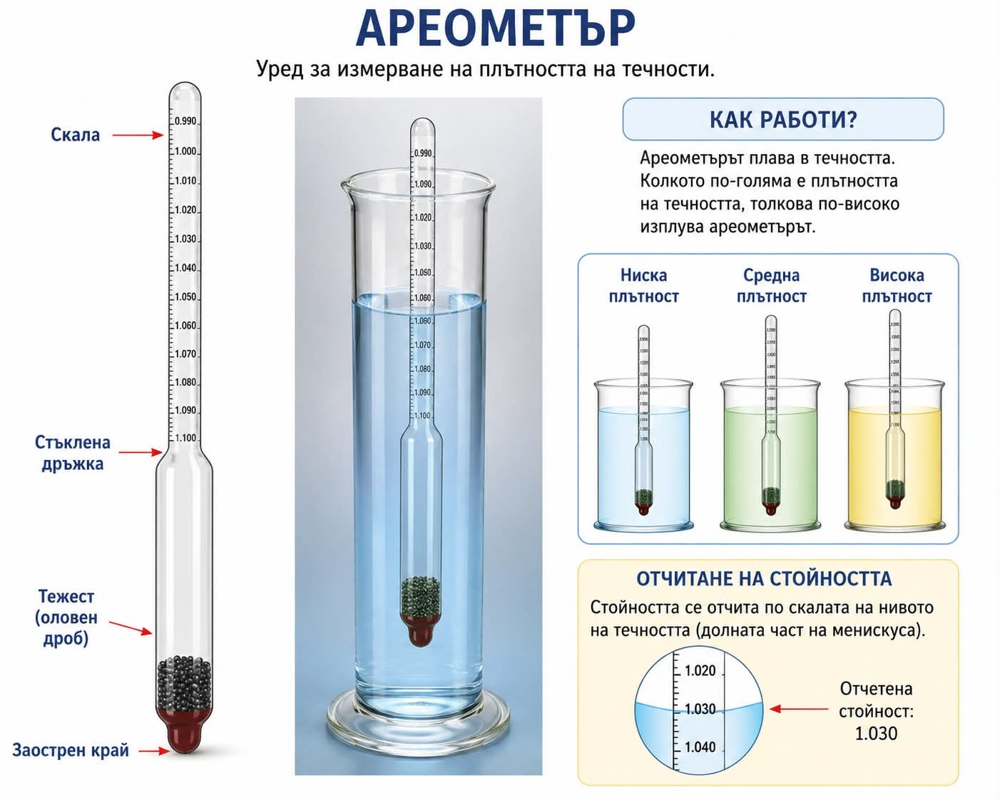

Тест №5
Зад.1. Коя е основната мерна единица за плътност на телата?
Зад.2. Колко пъти стъклено топче е по-тежко от дървено, ако дървото е бял бор? Топчетата са с еднакви размери.
Зад.3. Намерете масата на алуминиево топче с обем 15 cm3?
Дадено: ........ Търси се: ........ Решение: ........
Зад.4. Намерете масата на дъбов паралелепипед с измерения:
10 cm × 6 cm × 5 cm.
10 cm × 6 cm × 5 cm.
Дадено: ......... Търси се: ......... Решение: ...........
Речник | Справочник
Зад.5. Кое от изброените кубчета ще потъне във вода?
Зад.6. Намерете масата на златно кубче с измерения 20 mm
Дадено: ......... Търси се: ......... Решение: ...........
Зад.7. Определете вида на веществото, от което е изработен паралелепипед с измерения:
4 dm × 20 cm × 100 mm, ако масата му е 7,2 kg
4 dm × 20 cm × 100 mm, ако масата му е 7,2 kg
Зад.8. Три съда с форма на паралелепипед и измерения съответно:
40 cm × 20 cm × 80cm ;
60 cm × 15 cm × 20cm ;
100 cm × 10 cm × 100cm,
са напълнени с вода. Определете най-голямото налягане върху дъното на кой от трите съда се упражнява.
Сили и налягане
40 cm × 20 cm × 80cm ;
60 cm × 15 cm × 20cm ;
100 cm × 10 cm × 100cm,
са напълнени с вода. Определете най-голямото налягане върху дъното на кой от трите съда се упражнява.
Сили и налягане
Дадено: ......... Търси се: ......... Решение: ...........
Зад.9. Какъв натиск упражнява налягане 5N/cm2 върху пластина с площ 40 mm2?
Дадено: ......... Търси се: ......... Решение: ...........
Зад.10. Бутилка с вместимост 1,5 l е пълна с мляко. Колко килограма е масата на млякото?
Речник |
Речник |
Дадено: ......... Търси се: ......... Решение: ...........
